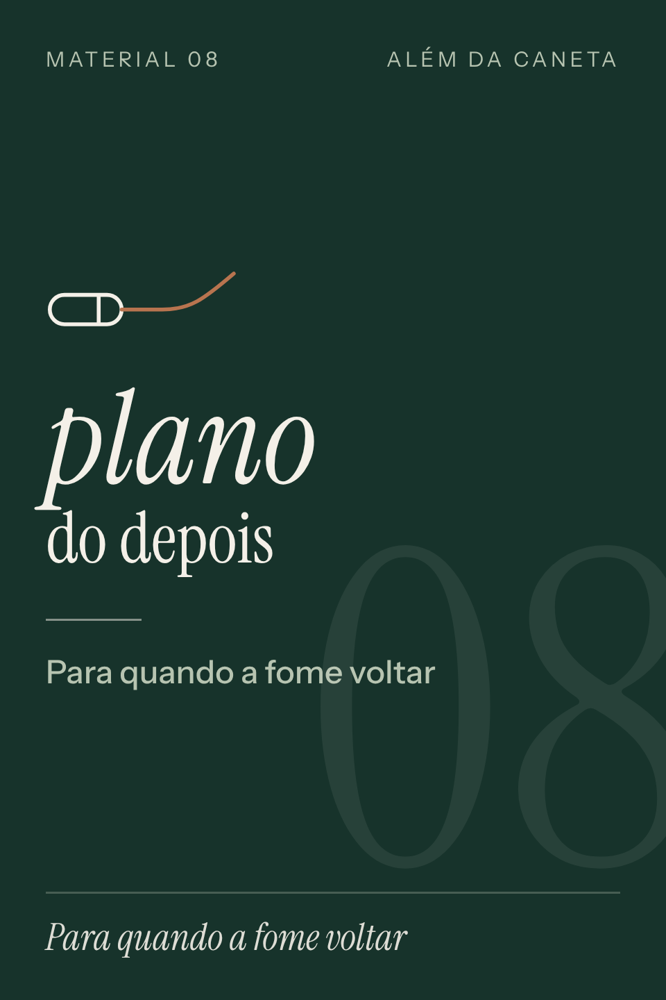

além da caneta
Oferta só desta página
E quando a fome voltar?
Seu pedido foi aprovado e o acesso já está a caminho do seu e-mail. Antes de fechar, uma pergunta que quase ninguém faz no começo do tratamento.

A caneta segura a fome. Mas não para sempre.
A dose muda, o tratamento pausa ou termina, e o apetite costuma voltar. Quem chega nesse momento sem um plano tende a voltar aos hábitos de antes.
- A fome volta mais forte e as porções crescem sem você perceber
- As vontades aparecem mais vezes ao longo do dia
- A rotina que funcionava começa a afrouxar
O que tem no Plano do Depois
- D1Por que pensar no depois agoraO melhor momento para criar hábito é enquanto a fome está baixa.
- D2Quando a dose muda ou o tratamento terminaO que costuma acontecer com o apetite e as perguntas para levar ao médico.
- D3Minha fome voltouSeis passos para responder à fome sem cortar refeição.
- D4Minhas refeições-baseAs fichas que você marcou viram o seu cardápio fixo.
- D5Fome ou vontade?A escala de fome de 1 a 5 e o que fazer em cada nível.
- D6A semana âncoraTrês hábitos que seguram a rotina na pior semana.
- D7Fim de semana e eventosComo sair do roteiro sem perder o caminho de volta.
- D8Quando a rotina desmontaOs sinais de alerta em três faixas e o plano de 30 dias.
- D9Plano de retomada72 horas para sair do "desmontou".
- D10Meu plano do depoisUma página para preencher, imprimir e revisar todo mês.
Em versão para o celular e para imprimir. Entra na mesma área de membros do seu plano.
Não, ainda não me convenceu.
Material educativo, para maiores de 18 anos. Não substitui acompanhamento médico e nutricional. Mudanças de dose, pausa ou fim do tratamento são sempre com o seu médico.
Garantia de 7 dias também para este material.